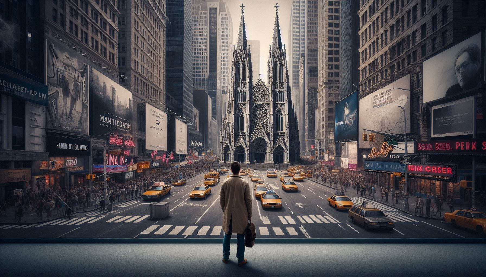
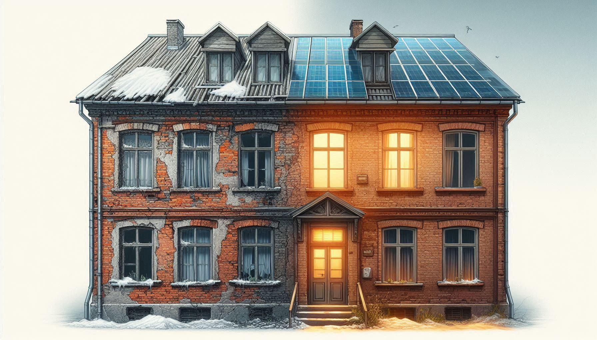
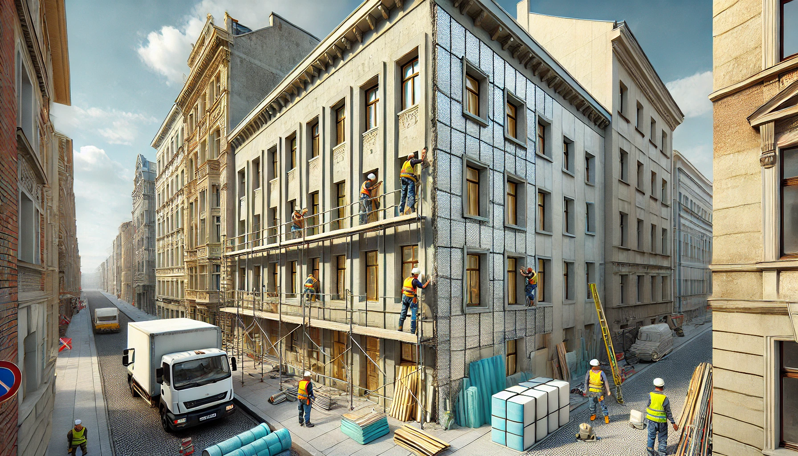

- Home
- Notre approche
-
Notre approcheNos actions
- À propos
Paysage
L’harmonie des paysages et leur cohérence
Le paysage est le fruit d'une géographie et d'un art de vivre. Une culture qui parvient à façonner de beaux paysages témoigne nécessairement de sa grandeur. La beauté n’est pas seulement une source de plaisir, mais aussi une condition et une conséquence de l’émergence d’une grande culture. La cohérence est l'élément clé d'un paysage harmonieux. Pour illustrer cette idée, faisons un exercice de pensée. Imaginons une église gothique, merveille architecturale en soi, placée au cœur de Manhattan. Le paysage en serait dénaturé, bien que l'église gothique soit artistiquement plus aboutie qu’un gratte-ciel new-yorkais. Cela nous conduit à la première règle du paysage : la valeur d’un paysage ne réside pas dans la somme des qualités individuelles des objets qui le composent, mais dans leur cohérence.
Respecter la cohérence architecturale dans nos rénovations
C’est pourquoi, dans nos projets, nous nous efforçons toujours de comprendre et de respecter la cohérence architecturale du contexte dans lequel notre projet s’insère. Cela implique une analyse approfondie de la manière dont le quartier a été construit autour de notre bâtiment. Quels matériaux ont été utilisés ? Quelles techniques de construction ont été employées ? Il est particulièrement crucial de prêter attention à ces éléments lorsque nous utilisons des techniques modernes de rénovation. Par exemple, l’isolation par l’extérieur est une méthode relativement récente. Avant l'apparition du chauffage central après la guerre et les chocs pétroliers, les bâtiments étaient très peu isolés. Ces changements ont permis l’émergence de nouvelles techniques d’isolation. Par conséquent, il est essentiel de bien réfléchir à l’intégration de la façade rénovée dans le style architectural local.
Architecture et identité locale
L'intégration harmonieuse d'un bâtiment dans son environnement repose également sur une compréhension des dynamiques sociales et historiques du quartier. Chaque édifice raconte une histoire et contribue à l'identité collective de la communauté. En prenant en compte ces aspects, nous ne préservons pas seulement l'esthétique du paysage, mais nous enrichissons aussi le tissu urbain. C'est cette approche holistique qui permet de créer des projets durables et respectueux de leur environnement, en harmonie avec l'histoire et la culture locales.
Vision Habitat Loiret
© Copyright 2024. All Rights Reserved.